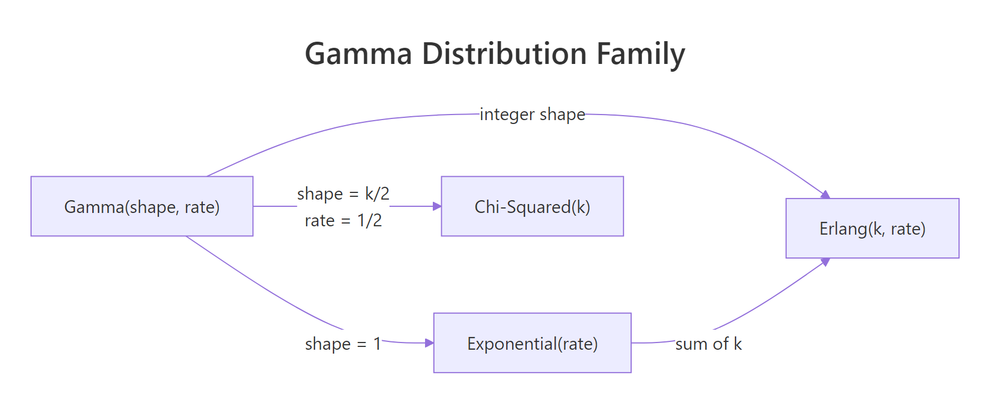
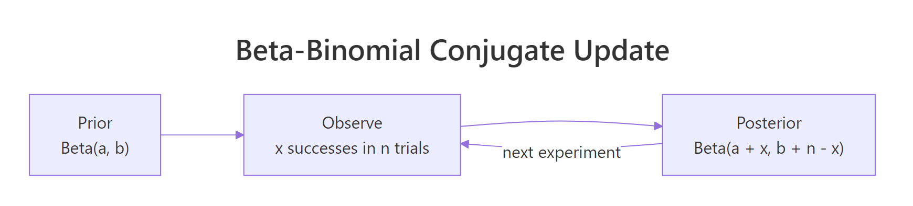

Gamma & Beta Distributions in R: Shape, Scale & Conjugate Priors
The gamma distribution models positive, right-skewed quantities like waiting times and total claim amounts, while the beta distribution models proportions bounded between 0 and 1. In Bayesian analysis they are the canonical conjugate priors, beta pairs with the binomial, gamma pairs with the Poisson, and getting fluent in their R parameterisations unlocks both families.
What is the gamma distribution and when does it arise?
The gamma distribution is what you get when you add up k independent exponential waiting times. It shows up whenever a quantity is positive, continuous, and right-skewed, insurance claim totals, time to the kth arrival in a Poisson process, rainfall amounts, session durations. R exposes four functions for it, dgamma(), pgamma(), qgamma(), and rgamma(), which return the density, cumulative probability, quantile, and random samples. The quickest way to build intuition is to plot its family of shapes.
The code below loads ggplot2 and tibble, builds a grid of x-values, computes the gamma density at three shape values (1, 3, and 6) with rate fixed at 1, and plots the three curves on one chart. Watch how the shape parameter pulls the peak to the right and makes the tail heavier.
Shape 1 is the familiar exponential decay, a purely monotonic curve starting at 1 and falling to zero. Shape 3 introduces a visible peak because the distribution now represents the sum of three exponentials. Shape 6 pushes that peak further right and makes the overall shape look almost bell-like. The single shape parameter is doing all the work here; the rate only stretches or squeezes the horizontal axis.
Try it: Evaluate dgamma() at x = 3 and pgamma() at q = 3 for Gamma(shape = 2, rate = 1). The first gives the height of the density, the second gives the probability of being at or below 3.
Click to reveal solution
Explanation: dgamma() returns the density value at a single point, while pgamma() integrates the density from 0 up to the query point. For Gamma(2, 1), roughly 80% of the probability mass sits below x = 3.

Figure 1: The gamma distribution generalises the exponential, Erlang, and chi-squared as special cases.
How do shape, rate, and scale parameters differ?
R's dgamma() accepts either rate (default) or scale, and tutorials often disagree on which name to use. Shape controls skewness: small shape gives a sharp early peak, large shape looks almost symmetric. Rate controls how quickly probability decays, and scale is its reciprocal, scale = 1 / rate. Mixing them silently produces wrong answers, so let's tighten the vocabulary.
The formula below captures the relationship between mean, shape, and rate.
$$\text{mean} = \frac{\alpha}{\beta} = \alpha \theta, \qquad \text{variance} = \frac{\alpha}{\beta^2} = \alpha \theta^2$$
Where:
- $\alpha$ = shape
- $\beta$ = rate
- $\theta = 1/\beta$ = scale
In R, the two parameterisations are fully equivalent. The next block computes the density at x = 1 using rate = 2 and then using scale = 0.5, identical numbers fall out because they describe the same distribution.
Both calls describe the same Gamma(3, rate = 2) distribution, just with a different vocabulary. Pick whichever convention matches the formula in your source material and stick with it for an entire analysis. Now let's see how the shape parameter alone reshapes the density while rate is held at 1.
As shape grows, the peak moves right and the curve grows progressively more symmetric. At shape = 10 the gamma looks strikingly similar to a normal distribution, a sign that with enough summed exponentials the central limit theorem starts to take over.
Try it: Compute the probability that a Gamma(shape = 3, rate = 0.5) draw exceeds 10. Use pgamma() with lower.tail = FALSE.
Click to reveal solution
Explanation: lower.tail = FALSE returns the upper-tail probability P(X > q) directly. About 12.5% of draws from Gamma(3, 0.5) exceed 10.
rate and scale is an error. R will throw an error if you pass both, intentional, to protect you from a half-remembered formula. Pick one naming convention for each analysis.What is the beta distribution and why is it used for proportions?
The beta distribution lives on the interval [0, 1], which makes it the natural distribution over a probability itself. Its two shape parameters, shape1 (often α) and shape2 (often β), act like "pseudo-successes" and "pseudo-failures." That single idea explains why Beta(1, 1) is flat, Beta(10, 10) is a tight bump around 0.5, and Beta(0.5, 0.5) is U-shaped with mass piled at both ends.
The mean is a simple ratio of the two parameters, and their sum controls how concentrated the distribution is.
$$\text{mean} = \frac{\alpha}{\alpha + \beta}, \qquad \text{concentration} = \alpha + \beta$$
The next block plots five beta densities covering the full range of shapes you're likely to meet in practice: uniform, U-shape, left-skew, right-skew, and tight symmetric.
Beta(1, 1) is the flat uniform, a reasonable prior when you want to say "I know nothing about this probability." Beta(10, 10) is the opposite: strong prior belief that the probability is near 0.5. The U-shape of Beta(0.5, 0.5), Jeffreys' prior, carries the different idea that the probability is likely near 0 or 1 but rarely in between. Think of α and β as pseudo-counts and these shapes make immediate sense.
Try it: Find the 2.5% and 97.5% quantiles of a Beta(10, 20) distribution. Together they form a 95% central interval.
Click to reveal solution
Explanation: qbeta() is the inverse of pbeta(). Passing a vector of probabilities returns the corresponding quantiles. The interval [0.18, 0.51] contains the middle 95% of the distribution's mass.
How do d/p/q/r functions work for both distributions?
R follows the same four-letter convention for every distribution: d = density, p = cumulative probability, q = quantile, r = random draw. Once you've used dnorm() and pnorm(), you already know how to use dgamma() and dbeta(). The only thing that changes is the parameter names.
| Function | Gamma signature | Beta signature | Returns |
|---|---|---|---|
d*() |
dgamma(x, shape, rate) |
dbeta(x, shape1, shape2) |
Density at x |
p*() |
pgamma(q, shape, rate) |
pbeta(q, shape1, shape2) |
P(X ≤ q) |
q*() |
qgamma(p, shape, rate) |
qbeta(p, shape1, shape2) |
Inverse of p-function |
r*() |
rgamma(n, shape, rate) |
rbeta(n, shape1, shape2) |
n random draws |
The next block exercises all four for a Gamma(3, 1) and a Beta(5, 2), one line each, to anchor the pattern.
The pattern is fully regular, pick your distribution, pick your question (density, probability, quantile, or sample), and swap in the right prefix. The parameter names change between shape/rate and shape1/shape2, which is why it pays to use named arguments rather than positional ones.
Try it: Draw 1000 samples from Beta(2, 5). Check that the sample mean is close to the theoretical mean α / (α + β) = 2/7 ≈ 0.286.
Click to reveal solution
Explanation: 1000 draws gives a sample mean accurate to about two decimal places. Run with 100,000 draws for three decimals.
lower.tail = FALSE for upper-tail probabilities. pgamma(q, ..., lower.tail = FALSE) returns P(X > q) directly, numerically safer than 1 - pgamma(q, ...) when the true probability is tiny. The same applies to pbeta().How does beta serve as the conjugate prior for binomial likelihoods?
Conjugate means: start with a Beta(α, β) prior over the success probability, observe x successes in n trials, and the posterior is also a beta, specifically Beta(α + x, β + n − x). No integration, no MCMC, no optimiser. Add the successes to α, add the failures to β, done. This closed-form update is why the beta distribution is the first tool every Bayesian reaches for when modelling a probability.
The formula behind the rule comes from combining the binomial likelihood with the beta prior and noticing the posterior has the same functional form.
$$p(\theta \mid x) \propto \theta^{\alpha + x - 1} (1 - \theta)^{\beta + n - x - 1}$$
That is the kernel of Beta(α + x, β + n − x), which is why the update is algebra rather than calculus. Let's run a concrete example: a weakly informative Beta(2, 2) prior, a coin that lands heads 7 times in 10 flips, and the resulting Beta(9, 5) posterior.
The prior Beta(2, 2) is a gentle bump around 0.5, a mild belief in a fair coin. After seeing 7 heads in 10 flips, the posterior Beta(9, 5) shifts noticeably to the right and tightens into a narrower curve that peaks near 0.65. The 95% credible interval says that the true probability of heads is between roughly 0.39 and 0.84 with 95% posterior probability, a useful honest statement given only 10 flips.
Try it: Repeat the update but with a much more opinionated Beta(20, 20) prior. Compare the posterior mean to the simple frequentist estimate 7/10.
Click to reveal solution
Explanation: With 40 pseudo-observations already baked into the prior, 10 real observations barely move the posterior. The posterior mean lands at 0.54, halfway between the prior mean of 0.5 and the data mean of 0.7.

Figure 2: The beta-binomial conjugate update: add successes to α and failures to β.
When should you use gamma as a prior?
The gamma distribution is the conjugate prior for the rate parameter of a Poisson likelihood. Start with Gamma(α, β) over the rate λ, observe a total count sum(x) across n periods, and the posterior is Gamma(α + sum(x), β + n). The update adds observed events to α and observed time to β, same algebraic elegance as the beta-binomial case.
Concretely: suppose you run a blog and want to estimate its daily visitor rate. You start with a weak prior Gamma(2, 1) expressing "I think the rate is around 2 visits/day but I'm not sure." Then you collect 5 days of data and see a total of 37 visits. The posterior is Gamma(2 + 37, 1 + 5) = Gamma(39, 6).
The posterior mean is 6.5 visits/day, and the 95% credible interval runs from about 4.6 to 8.8 visits/day. That is a full summary of what the data have to say about the underlying rate, and it took three lines of arithmetic, no sampler, no optimiser.
Try it: A second week brings in 45 visits over 7 days. Update the Gamma(39, 6) posterior to a new posterior and report its mean.
Click to reveal solution
Explanation: Bayesian updating is sequential by design, today's posterior becomes tomorrow's prior. The new posterior Gamma(84, 13) has a mean of about 6.46 visits/day and a tighter interval than before because it now contains 12 days of evidence.
Practice Exercises
Two capstone problems that pull several concepts together.
Exercise 1: Claim-size tail probabilities
An insurance company models its daily total claim amount (in thousands) as Gamma(shape = 4, rate = 0.5). Use pgamma() and qgamma() to answer:
- What is the probability that a day's claims exceed 15 (thousand)?
- What claim amount is exceeded on only 1% of days?
Save the two answers to claim_tail and claim_q99.
Click to reveal solution
Explanation: About 6% of days exceed 15 (thousand) in claims. The 99th percentile is roughly 26.6 (thousand), exceeded on only 1 of every 100 days.
Exercise 2: A/B test posterior probability
You run an A/B test. Control: 48 conversions in 200 visitors. Variant: 62 conversions in 200 visitors. Using a weakly informative Beta(1, 1) prior for both, compute each posterior, then simulate 20,000 draws from each posterior to estimate P(variant rate > control rate). Save to prob_variant_better.
Click to reveal solution
Explanation: In about 94% of the 20,000 simulated scenarios, the variant's conversion rate exceeds the control's. That is a direct posterior probability, much more interpretable than a frequentist p-value and computed entirely from closed-form conjugate posteriors.
Complete Example
A full A/B test workflow that ties gamma, beta, and conjugate updating together in one worked analysis. Two groups with Beta(1, 1) priors, their posteriors plotted, and a posterior probability of lift.
The posterior for the variant sits visibly to the right of the control posterior, and 94% of posterior draws put the variant's rate above the control's. The 95% credible interval for the absolute lift is roughly 0.4 to 13.7 percentage points. This is the Bayesian decision-maker's report: both a probability of improvement and a range of plausible effect sizes, derived from three lines of conjugate arithmetic.
Summary
Gamma and beta at a glance:
| Property | Gamma | Beta |
|---|---|---|
| Domain | (0, ∞) | (0, 1) |
| Parameters | shape, rate (or scale) | shape1 (α), shape2 (β) |
| Mean | shape / rate | α / (α + β) |
| Conjugate prior for | Poisson rate, exponential rate | Binomial probability, Bernoulli |
| Special cases | Exponential, Erlang, chi-squared | Uniform (α=β=1), Jeffreys (α=β=0.5) |
| R functions | dgamma, pgamma, qgamma, rgamma |
dbeta, pbeta, qbeta, rbeta |
Key takeaways:
- Gamma lives on the positive reals and models positive skewed quantities. Shape controls skewness, rate (or scale) controls spread.
- Beta lives on [0, 1] and models proportions. Shape1 and shape2 act as pseudo-successes and pseudo-failures.
- The d/p/q/r convention carries over from the normal. Density, cumulative probability, quantile, random sample, same four verbs for every distribution.
- Conjugate priors give you closed-form Bayesian updates. Beta-binomial for success rates, gamma-Poisson for event rates. No sampler required.
References
- R Core Team, GammaDist: The Gamma Distribution. Official stats docs. Link
- R Core Team, Beta: The Beta Distribution. Official stats docs. Link
- Gelman, A. et al., Bayesian Data Analysis, 3rd Edition (2014). Chapman & Hall/CRC. Chapter 2: Single-parameter models.
- Hoff, P. D., A First Course in Bayesian Statistical Methods (2009). Springer. Chapter 3: One-parameter models.
- Wickham, H., ggplot2: Elegant Graphics for Data Analysis, 3rd Edition. Link
- Wikipedia, Gamma distribution. Link
- Wikipedia, Beta distribution. Link
Continue Learning
- Normal, t, F, and Chi-Squared Distributions in R, the four distributions that dominate classical inference, with the d/p/q/r conventions you just practised here.
- Central Limit Theorem in R, why the gamma starts looking normal at large shape values.
- Cauchy & Heavy-Tailed Distributions in R, the other end of the spectrum, where the mean is undefined and conjugate updates don't save you.